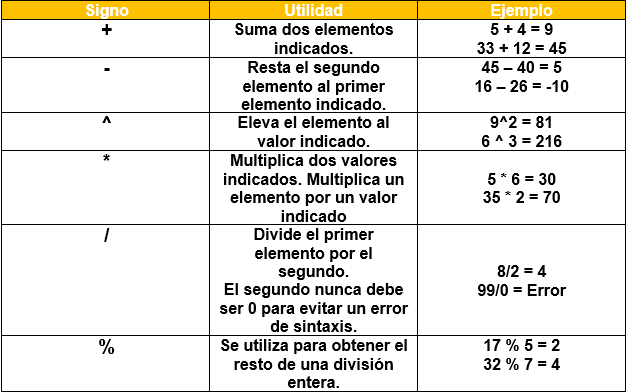
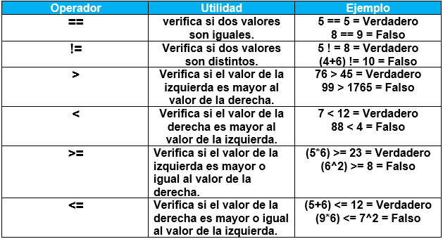
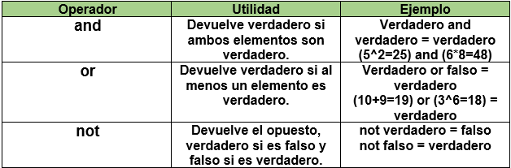
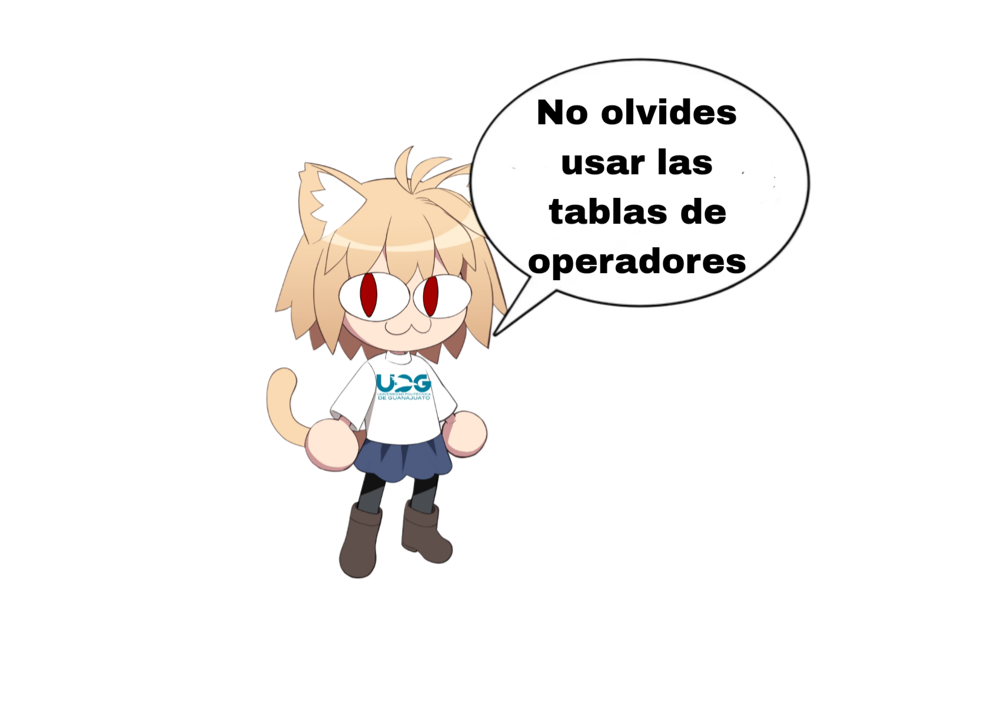

Operadores
Los operadores son signos y símbolos que se utilizan para indicar el tipo de operación que desea realizarse, desde operaciones matemáticas hasta la comparación de dos o más valores.
Tipos de operadores:
Operadores aritméticos:
Los operadores aritméticos se utilizan para calcular el resultado de una operación con dos o más valores.
Nota: Si la operación tiene más de un signo, deberás aplicar la jerarquía de operaciones.

Operadores de comparación:
Los operadores de comparación permiten comparar dos valores y comprobar si el resultado es verdadero o falso.

Operadores lógicos:
Los operadores lógicos utilizan datos booleanos (verdadero o falso) para obtener un resultado lógico.

Ejercicios:
¡Hora de poner a prueba lo aprendido! Resuelve las siguientes operaciones para determinar si son verdaderas o falsas:
(4² ÷ 2) == (6 * 6 - 15)
((4³) * (4 * 5) ÷ (20 % 3)) ≥ ((9 ÷ 3) * (4 + 6))
(9² = 81) and ((4³) ÷ 8 = 8)
not(((4 + 5 - 3 * 8) ÷ (9^(3 - 2) * 4⁴)) ÷ 5 * 8) = 76

Siguiente tema
Inicio
Programación en tus manos - 2025